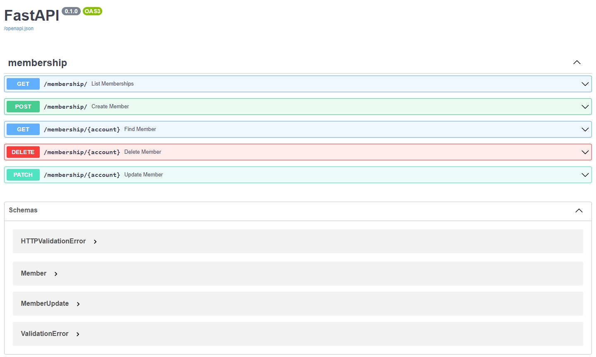
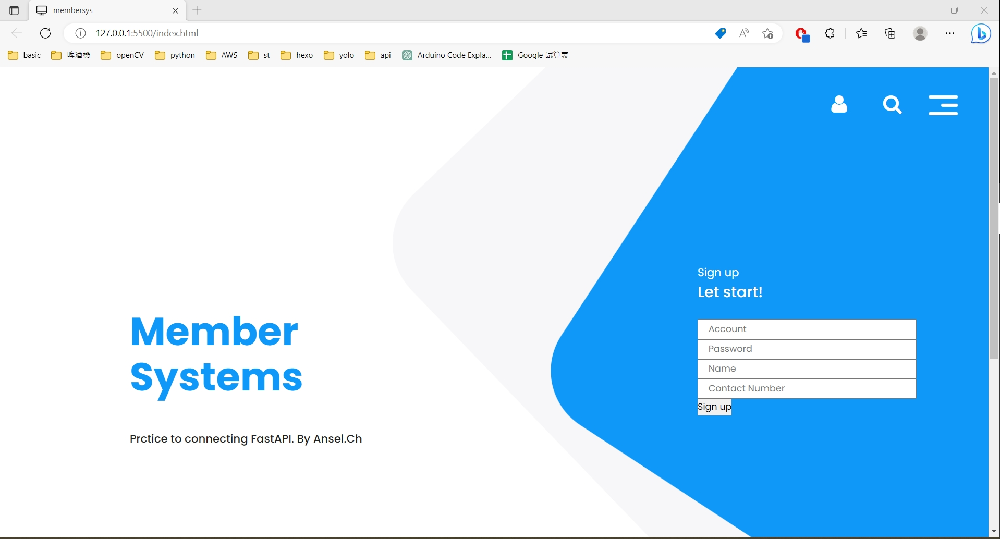
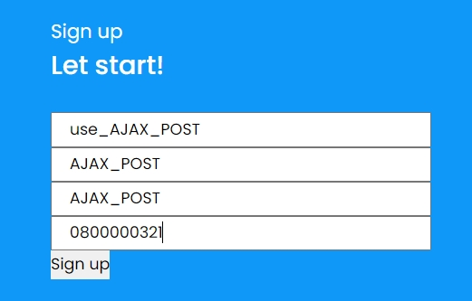
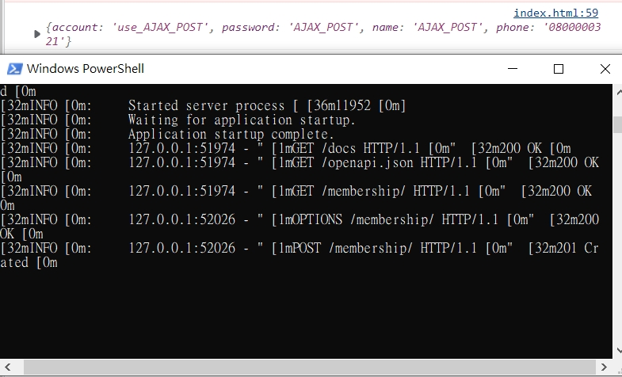
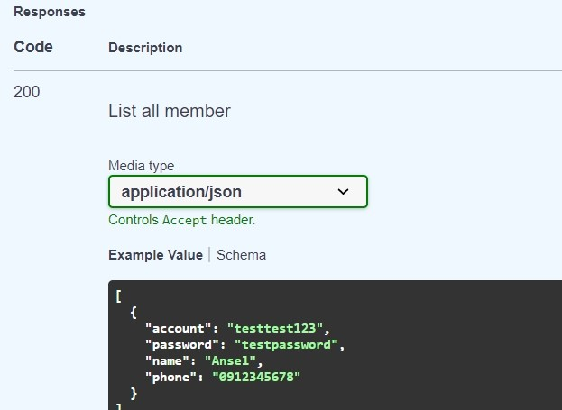
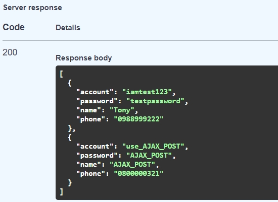

[Fastapi] 快速製作一個會員後台API,並用ajax串接
今天要用python來開發API，至於什麼是RESTful API就不贅述，網路上都可以輕易找到!
這次會使用Fastapi並連接MongoDB製作會員系統API，過程相當簡單!
並在最後寫一個簡單的註冊頁面測試API。
前置作業
pip install fastapi[all]==0.75.0
pip install pydantic==1.9
pip install pymongo[srv]==3.11.0
pip install python-dotenv==0.19.2
pip install pytest==7.0.1
fastapi是一個開源的api框架，可以去官網看，且swagger UI支援，不需要加裝第三方套件測試
pydantic 是資料處理的套件
pymongo 是MongoDB出的py連接套件
並準備一個MongoDB帳號，若要用本地端的DB就不用準備，這邊附上官方教學
資料結構
–main.py
–models.py
–routes.py
–.env
Coding
- 先設置好.env，連接DB用，ATLAS_URI照著上面官方教學就可以拿到了
ATLAS_URI=mongodb+srv://<usr>:<pwd>@cluster0.mxggl0u.mongodb.net/?retryWrites=true&w=majority
DB_NAME=membership #自己定義資料庫
- main.py
from fastapi import FastAPI
from dotenv import dotenv_values
from pymongo import MongoClient
from routes import router as member_router
config = dotenv_values(".env") #讀取.env
app = FastAPI() #設置主要的API
# 設置允許串接ip，等等前端才能連進來
origins = [
"http://127.0.0.1:5500"]
app.add_middleware(
CORSMiddleware,
allow_origins=origins,
allow_credentials=True,
allow_methods=["*"],
allow_headers=["*"],
)
@app.on_event("startup") #連接DB
def startup_db_client():
app.mongodb_client = MongoClient(config["ATLAS_URI"])
app.database = app.mongodb_client[config["DB_NAME"]]
@app.on_event("shutdown")
def shutdown_db_client():
app.mongodb_client.close()
# member_router是會員系統的router,若有需求可以設置多個router
app.include_router(member_router, tags=["membership"], prefix="/membership")
- models.py #建立資料格式
import uuid
from typing import Optional
from pydantic import BaseModel, Field
class Member(BaseModel):
account: str = Field(max_length=16,
min_length=8, description='最少輸入8個字元,最多16個字元')
password: str = Field(...)
name: str = Field(...)
phone: str = Field(...)
'''
Field(...)是必填欄位,Field（None） 是可選填
Field(None,title="The description of the item",max_length=10,alias='我是替代字')
'''
class Config:
allow_population_by_field_name = True
schema_extra = {
"example": {
"account": "testtest123",
"password": "testpassword",
"name": "Ansel",
"phone": "0912345678"
}
}
class MemberUpdate(BaseModel):
name: Optional[str]
phone: Optional[str]
class Config:
schema_extra = {
"example": {
"name": "NewName",
"phone": "0900123321"
}
}
- routes.py #這邊只設置 membership的API，有需要可以多設置購物車等等的API
from fastapi import APIRouter, Body, Request, Response, HTTPException, status
from fastapi.encoders import jsonable_encoder
from typing import List
from models import Member, MemberUpdate
router = APIRouter()
@router.post("/", response_description="Create a new account", status_code=status.HTTP_201_CREATED, response_model=Member)
def create_member(request: Request, member: Member = Body(...)):
# 檢查帳號是否已存在
existing_member = request.app.database["member_data"].find_one(
{"account": member.account}
)
if existing_member:
raise HTTPException(
status_code=status.HTTP_400_BAD_REQUEST, detail="Account already exists")
# 新增會員
member = jsonable_encoder(member)
new_member = request.app.database["member_data"].insert_one(member)
created_member = request.app.database["member_data"].find_one(
{"_id": new_member.inserted_id}
)
return created_member
@router.get("/", response_description="List all member", response_model=List[Member])
def list_memberships(request: Request):
books = list(request.app.database["member_data"].find(limit=100))
return books
@router.get("/{account}", response_description="Get member by id", response_model=Member)
def find_member(account: str, request: Request):
if (member := request.app.database["member_data"].find_one({"account": account})) is not None:
return member
raise HTTPException(status_code=status.HTTP_404_NOT_FOUND,
detail=f"Member with account {account} not found")
@router.patch("/{account}", response_description="Update member info", response_model=Member)
def update_member(account: str, request: Request, member: MemberUpdate = Body(...)):
member = {k: v for k, v in member.dict().items() if v is not None}
if len(member) >= 1:
update_result = request.app.database["member_data"].update_one(
{"account": account}, {"$set": member}
)
if update_result.modified_count == 0:
raise HTTPException(
status_code=status.HTTP_404_NOT_FOUND, detail=f"Member with ID {account} not found")
if (
existing_book := request.app.database["member_data"].find_one({"account": account})
) is not None:
return existing_book
raise HTTPException(status_code=status.HTTP_404_NOT_FOUND,
detail=f"Member with ID {account} not found")
@router.delete("/{account}", response_description="Delete account")
def delete_member(account: str, request: Request, response: Response):
delete_result = request.app.database["member_data"].delete_one(
{"account": account})
if delete_result.deleted_count == 1:
response.status_code = status.HTTP_204_NO_CONTENT
return response
raise HTTPException(status_code=status.HTTP_404_NOT_FOUND,
detail=f"Member with ID {account} not found")
這邊我用啟動後的畫面比較好懂

上面可以看到用
GET /membership/:得到DB內的所有資料
POST /membership/:建立會員資料
GET /membership/{account}:{account}內帶入要查詢的帳號
DELETE /membership/{account}:{account}內帶入要刪除的帳號
PATCH /membership/{account}:{account}內帶入要更新的帳號
至於啟動的部分會用到uvicorn來跑這隻程式，在終端機輸入
python -m uvicorn main:app --reload
跑起來會出現
INFO: Uvicorn running on http://127.0.0.1:8000 (Press CTRL+C to quit)
INFO: Started reloader process [9560] using watchgod
INFO: Started server process [9244]
INFO: Waiting for application startup.
INFO: Application startup complete.
之後再瀏覽器輸入http://127.0.0.1:8000/docs 就會進入剛才的swagger UI了，便可以開始做測試
不想開啟也可以用curl指令進行測試，不過這邊不贅述。
網頁前端
<script>
$(document).ready(function () {
$('#formId').submit(function (event) {
// 防止提交默認
event.preventDefault();
// 獲取表單數據
var account = $('#account').val();
var password = $('#password').val();
var name = $('#name').val();
var contactNumber = $('#phone').val();
// POST Requests with JSON
$.ajax({
url: 'http://127.0.0.1:8000/membership/',
type: 'POST',
contentType: 'application/json',
data: JSON.stringify({
account: account,
password: password,
name: name,
phone: contactNumber
}),
success: function (response) {
console.log(response);
},
error: function (xhr, status, error) {
console.error(error);
}
});
});
});
</script>
<form class="transfot" id='formId'>
<div class="col-md-12">
<span>Sign up</span>
<h3>Let start!</h3>
</div>
<div class="col-md-12">
<input class="col-md-12" id="account" placeholder="Account" type="text"
name="Account">
</div>
<div class="col-md-12">
<input class="col-md-12" id="password" placeholder="Password" type="text"
name="Password">
</div>
<div class="col-md-12">
<input class="col-md-12" id="name" placeholder="Name" type="text" name="Name">
</div>
<div class="col-md-12">
<input class="col-md-12" id="phone" placeholder="Contact Number" type="text"
name="Contact Number">
</div>
<div class="col-md-12">
<button type='submit' id='submitButton'>Sign up</button>
</div>
</form>
AJAX程式碼大致是這樣
 填好資料後送出

可以看到console回傳JSON格式，且FAST API的terminal顯示POST Created
之後再進到Swagger用GET memberlist驗證


左邊是傳送前只有一筆資料，右邊可以看到剛剛POST進來的第二筆。
簡單的前後端連接就完成啦!
Ref
- https://www.mongodb.com/docs/atlas/tutorial/connect-to-your-cluster/?_ga=2.105960192.2035563352.1678696693-1842266058.1678696693#connect-to-your-atlas-cluster
- https://www.mongodb.com/languages/python/pymongo-tutorial
- https://www.mongodb.com/docs/drivers/pymongo/
- https://cloud.tencent.com/developer/article/1949684
- https://chat.openai.com/chat